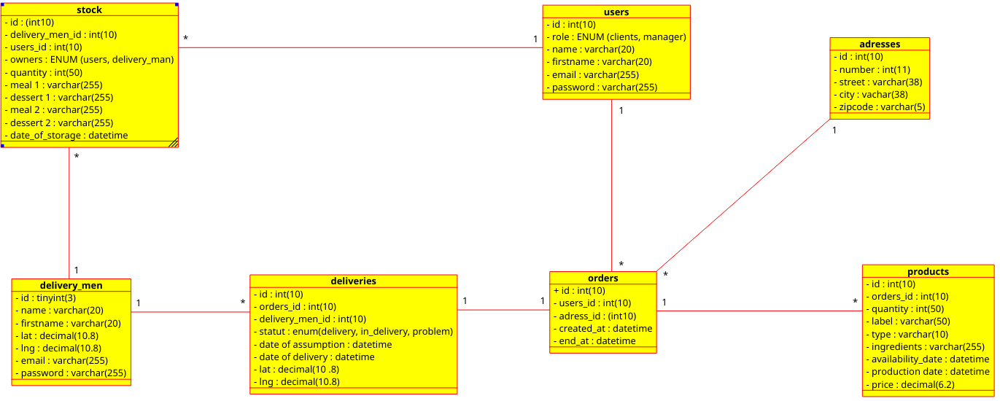
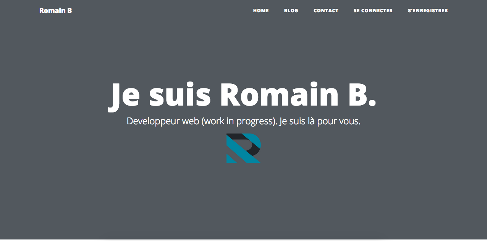
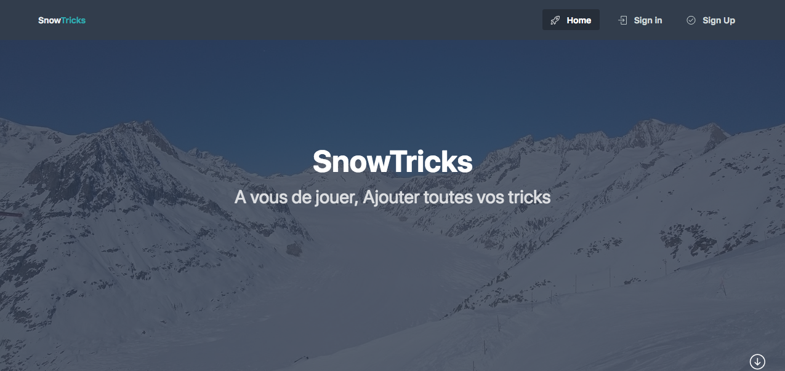

Mes projets


Les films en plein air
Il s'agit d'une maquette, bootstrap et material sont utilisés
Voir en ligne Voir en détails

Express Food
Concevoir une solution technique adaptée, créer une bdd, ainsi que diagrammes
Voir en détails

Blog
Ce blog est en PHP, je me suis servis du pattern ADR, j'ai crée des middlewares, et je me suis servi de PHP-DI pour l'injection de dépendances
Voir en ligne Voir en détails
